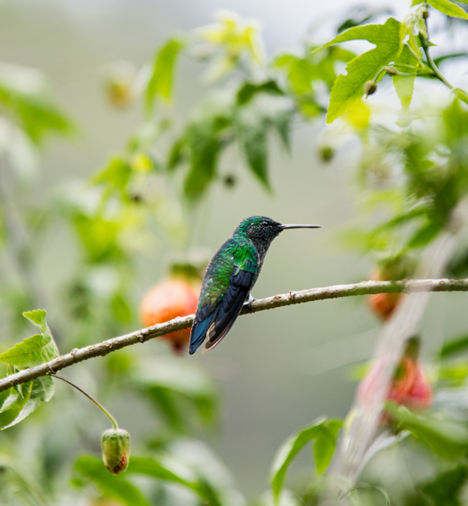
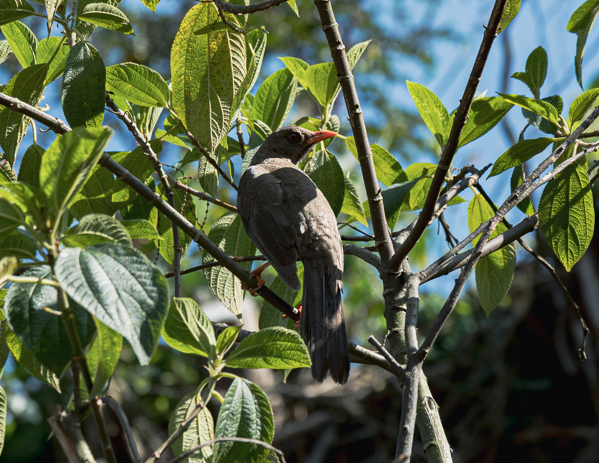
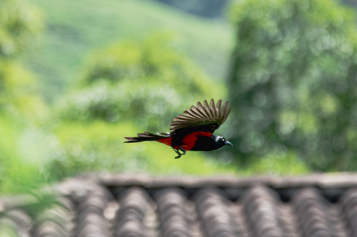

Especial para avistamiento de aves, orquídeas y miradores naturales.
Esta ruta te lleva a través de un denso bosque montañoso, donde la frescura del clima contrasta con la calidez de la ciudad. El sendero, bien marcado, se adentra entre árboles nativos y una exuberante variedad de flora, incluyendo impresionantes orquídeas que florecen en los meses de lluvia. A medida que avanzas, el canto melodioso de aves como colibríes y tucanes acompaña tu recorrido.


